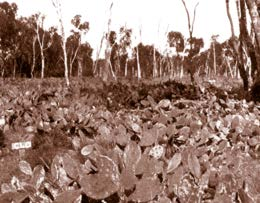
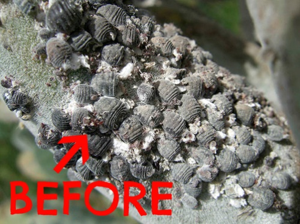
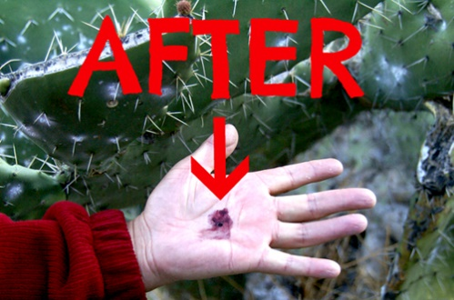
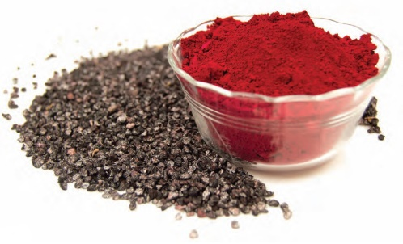

By Ephrayim Baskin | Rosh Hashana 5778 — September 2017
Carmine, also known as carminic acid or E120, is a natural red colouring derived from the cochineal insect. It is also a red flag that a product is not kosher. Ironically, many kosher investigations have been stopped dead in their tracks with the number 120. Better dead than red. However, the non-kosher status of carmine is not black and white. In fact, its status might leave you purplexed, as there are some kosher authorities who have alredy accepted carmine for centuries (don’t feel too violeted, most of these puns are not orangeinal).
Before we address this red-hot halachic issue, it would be remiss not to mention the fascinating history of carmine and its unique connection to Australia (albeit a red-herring). Before the Spanish conquest of the Aztec Empire in the 16th century, the most popular red dye was derived from another similar insect called the ‘kermes’ bug, and the dye it produced was called ‘crimson’. However, the new world cochineal bug produced a more vivid red than the old-world kermes.
Red and redder.
Very quickly, cochineal became a prized dye all over the world, with Spain and Portugal controlling the world-wide monopoly. However, the Brits didn’t control a red cent and were dyeing to have it, as carmine was heavily used in the western world’s clothing industry. In fact, the famous red coats of the British army were coloured with expensive cochineal[1].
To counterbalance the Spanish monopoly, Captain Arthur Phillip and the first fleet obtained cochineal- infested prickly pear cacti from Brazil on their way to settle Australia. However, this plan left Captain Phillip red-faced. Not only did all the cochineal insects die, but this and other related cacti became the most invasive weeds ever imported to Australia[2]. By 1925, the cacti covered 529,000km2 in New South Wales and Queensland, and was spreading at a rate of 5,000km2 a year. To combat this dyer threat, a biological control was introduced – the cactoblastis caterpillar (you can guess what they do!), which proved to be the world’s most spectacular example of weed biological control.

The introduction of cheaper artificial red dyes in the 19th century resulted in the sharp fall of demand for cochineal in the clothing industry, but it remained popular in food, as it is one of the most stable natural colours – even more stable than some artificial colours. Carmine has recently seen a resurgence in the food industry, being pushed by NAFNAC (no artificial flavours, no artificial colours). Sadly, this has caused many kosher losses to the natural colour red, most recently Pasito, Sunkist, Kirks Creaming Soda and Tim-Tams.
The bugging question is: If carmine is derived from a bug and bugs aren’t kosher, how can there be opinions who permit it? To answer this, we first need to consider how carmine is produced.
To obtain 1 kg of cochineal powder, 80,000-100,000 dried female insects are required. The insects are collected at 90-110 days old, when the concentration of the red dye is at the highest, and a squashed bug will leave you red-handed. The bugs are either dried in the open air (silver cochineal) or in an oven (black cochineal). Dried insects are boiled, filtered and then precipitated by adding various chemicals. Despite my ridiculous red imagery, carminic acid can produce a range of colours – from pale strawberry to blackcurrant – based on the type of chemical added to precipitate the dried cochineal extraction and the acidity of the final product[3]. It is not just a pigment of your imagination.


From a Kosher perspective, the most significant step is that the cochineal is dried. Halachically, any dead boneless creature is considered to have turned completely to dust after 12 months[4]. One practical outcome of this principle is that dried fruit more than 12 months old does not need to be checked for bugs, because even if they were present, they are by now no more than dust. By extension, dried carmine powder should not have any kosher concerns[5]. This would be a good place for a dry pun.

However, not all agree that drying a material removes its prohibited status[6]. Furthermore, some authorities distinguish between a dried insect that was unintentionally consumed (as in the dried fruit example above) and drying an insect specifically for consumption (i.e. carmine)[7]. This concept is known as Achshavei (the consumer considering the item to be important). Accordingly, carmine would be an issue.
A further distinction is that, in the case of the dried insect in a fruit, the essence of the insect ceases to be significant, whereas regarding the cochineal bug, its essence, the red pigment, does not become insignificant. On the contrary, it becomes more potent. By example, if milk powder is dried or left for 12 months and then rehydrated, does it cease to be dairy[8]?
Practically, all mainstream kosher agencies will not approve a product with carmine (they’ll tell the company to bug off). However, if one inadvertently consumed a carmine containing creation, they won’t be in the red, as there is what to rely on (the lesser of two weevils).
The carmine debate isn’t limited to the food we eat today, but is pertinent to a red dye used in the Torah called tola’as shoni. This dye was used in the Kohen Gadol’s garments, the curtains and coverings of the Mishkan, as well as in the processes of the Parah Adumah and purification of a Metzora. In fact, this dye appears often in high holiday liturgy, quoted from a verse in Yeshaya (1:18): “If your sins prove to be like ‘shonim’, they will become as white as snow; if they prove to be as red as ‘a tola’, they shall become wool.” The Radak[9] argues that the tola’as shoni is the crimson dye extracted from the kermes bug discussed above. However, Rabbeinu B’chaye[10] questions this, as only items permitted to eat can be used for the work of heaven[11]. Therefore, Rabbeinu B’chaye explains that the dye called tola’as shoni originates from a fruit that contains the insect, as opposed to the insect itself being the source of the dye.
How does the Radak resolve Rabbeinu B’chaye’s question? How could he say that the non-kosher bug was used in the Mishkan’s curtains (as snug as a bug in a rug)? There are various answers, one of which relies on the above leniency of drying the insect to produce the dye[12].
The good news is that we will not have to go on a non-carmine dye-it indefinitely. With the backing of the Danish High Technology Foundation, the company Chr. Hansen has identified the gene of the cochineal that produces the red pigment. They genetically modified a microorganism to incorporate these genes and produce the pigment via fermentation[13]. Although this breakthrough is still a few years away from commercialisation, when it is complete we will have a completely kosher carmine to dye-n on.
I would like to wish you a sweet new year! May everyone beware of the colour red, E120, and may Hashem change our red sins to white and let us live to 120[14].
FOOTNOTES:
[1] Wikipedia. (2017). Cochineal. Retrieved 30/8/17 from https://en.wikipedia.org/wiki/Cochineal
[2] Tanner, L. R. (2009). Prickly Pear History. Retrieved 30/8/17 from https://web.archive.org/web/20091030 181043/http://www.northwestweeds.n sw.gov.au/prickly_pear_history.htm
[3] Wikipedia. (2017). Carmine. Retrieved 30/8/17 from https://en.wikipedia.org/wiki/Carmine
[4] Shulchan Aruch Yoreh Deah 84:8, based on Gemara Chullin (88a). According to the Ra’avad, 12 months is necessary to ensure that no moisture remains in the insect. Based on this, mechanically drying the insect out would achieve the same result even if the process took less than 12 months (Binas Odom Issur vHetter siman 36), and the dried insect would not be an issue.
[5] Pischei Teshuvah 87:20 in the name of Tiferes Tzvi, based on Shulchan Aruch Yoreh Deah 87:10, regarding using a non-kosher calf-stomach to the point that it is ‘like a piece of wood’.
Others permit it, even when it is not known if the powder is 12 months old b’dieved – after the fact (Shoel uMeishiv quoted in Darkei Teshuvah YD 102:30) or when there is significant financial loss (Minchas Yitzchok 3:96) based on a Sfeik-Sfeika: Firstly, perhaps the insect is more than 12 months old, (and even if less, perhaps mechanical drying helps,) and secondly, as carmine is always used in amounts that are significantly less than 1/60, although some authorities hold that it is not bottul because it gives colour (Chazusa), not everyone agrees to this (Chazusa lav Milsa). However, the Minchas Yitzchok notes that his hashgocha would not allow it.
[6] Pri Megadim and Noda B’Yehudah cited by Pischei Teshuvah 87:21.
[7] Binas Odom Issur vHetter siman 36 cited by Darkei Teshuvah YD 84:195.
[8] Rabbi Belsky quoted by Rabbi Dovid Cohen http://www.crcweb.org/ shiurim_dc/Insects/Insects%2084- 17%20(Dec%2021,%202012).mp3. Rabbi Mordechai Eliyahu quoted in Kashrus HaMashkaos pg 419. The significance of this approach over that of the Binas Odom (Achshavei) is that the dried carmine remains an Issur D’Orayso, unlike Achshavei which is an Issur D’Rabanan. One of the consequences of this is that, according to the Pri Chodosh and Chassam Sofer, Chazusa only applies to an Issur D’Orayso. [Conversely, according to the Pri Megadim and Minchas Cohen, Chazusa applies even to an Issur D’Rabanan.] [9] Divrei HaYamim II 3:14.
[10] Shemos 25:3.
[11] Shabbos 28a. Although the Gemara there discusses Tefillin, the same would apply to the garments of the Kohen Gadol and the Mishkan.
[12] For a thorough explanation on the topic, see the comprehensive article by Rabbi Yirmiyohu Kaganoff http://rabbikaganoff.com/is-seeing- red-kosher/
[13] CHR Hansen. (2015). Chr. Hansen develops game-changing fermentation process for carmine. Retrieved 30/7/17 from http://www.chr-hansen.com/ en/media/press-releases/2015/6/chr- hansen-develops-gamechanging- fermentation-process-for-carmine
[14] Last time I ate food colouring, I dyed inside. (Sorry, had to put that in somewhere :) – Gut Yom Tov!)
Originally published in Young Yeshivah Magazine. Republished with permission.